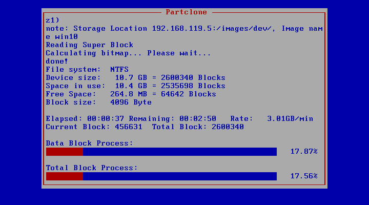

FOGProject
基于Linux的免费开源计算机映像PXE解决方案。
简介
FOG Project是一种开源的镜像克隆和网络管理解决方案。
支持 PXE 引导环境(DHCP,iPXE,TFTP,HTTP,vsftp)。
支持 Windows (XP, Vista, 7, 8/8.1, 10), Linux and Mac OS X 的镜像。
安装PXE服务器
用VMware的虚拟机做的测试，创建了一个自定义网络VMnet2，类型选择“仅主机模式”，但不“使用本地DHCP服务将IP地址分配给虚拟机”。然后使用VMnet2创建一个Ubuntu虚拟机做为Fog Project Server，进入系统后首先配置VMnet2网卡的静态IP地址网关DNS等，例如我的这个虚拟机设置为192.168.119.2。然后执行安装脚本。
提示选项中有一条是询问是否使用FOG server做为DHCP服务？(Would you like to use the FOG server for DHCP service?)。我选择是，所以脚本自动安装了isc-dhcp-server，并且自动配置好了PXE启动的引导服务器地址和配置文件。
如果已有DHCP服务，此处无需FOG server提供DHCP，但是需要手动设置DHCP代理，不向客户机分配IP地址，只是补充提供引导信息。例如Dnsmasq能实现此功能，参考 知乎文章-自助装机平台建设方案。
jerry@jerry:~/Downloads/fogproject-master/bin$ sudo ./installfog.sh
[sudo] password for jerry:
Installing LSB_Release as needed
* Attempting to get release information.......................Done
+------------------------------------------+
| ..#######:. ..,#,.. .::##::. |
|.:###### .:;####:......;#;.. |
|...##... ...##;,;##::::.##... |
| ,# ...##.....##:::## ..:: |
| ## .::###,,##. . ##.::#.:######::.|
|...##:::###::....#. .. .#...#. #...#:::. |
|..:####:.. ..##......##::## .. # |
| # . ...##:,;##;:::#: ... ##.. |
| .# . .:;####;::::.##:::;#:.. |
| # ..:;###.. |
| |
+------------------------------------------+
| Free Computer Imaging Solution |
+------------------------------------------+
| Credits: http://fogproject.org/Credits |
| http://fogproject.org/Credits |
| Released under GPL Version 3 |
+------------------------------------------+
Version: 1.5.9 Installer/Updater
sed: -e expression #1, char 7: unterminated `s' command
What version of Linux would you like to run the installation for?
1) Redhat Based Linux (Redhat, CentOS, Mageia)
2) Debian Based Linux (Debian, Ubuntu, Kubuntu, Edubuntu)
3) Arch Linux
Choice: [2]
Starting Debian based Installation
FOG Server installation modes:
* Normal Server: (Choice N)
This is the typical installation type and
will install all FOG components for you on this
machine. Pick this option if you are unsure what to pick.
* Storage Node: (Choice S)
This install mode will only install the software required
to make this server act as a node in a storage group
More information:
http://www.fogproject.org/wiki/index.php?title=InstallationModes
What type of installation would you like to do? [N/s (Normal/Storage)] N
We found the following interfaces on your system:
* ens33 - 192.168.118.134/24
* ens34 - 192.168.119.2/24
Would you like to change the default network interface from ens33?
If you are not sure, select No. [y/N] y
What network interface would you like to use? ens34
Would you like to setup a router address for the DHCP server? [Y/n]
What is the IP address to be used for the router on
the DHCP server? [192.168.118.2]192.168.119.2
Would you like DHCP to handle DNS? [Y/n]
What DNS address should DHCP allow? [127.0.0.53] 192.168.119.2
Would you like to use the FOG server for DHCP service? [y/N] y
This version of FOG has internationalization support, would
you like to install the additional language packs? [y/N] y
Using encrypted connections is state of the art on the web and we
encourage you to enable this for your FOG server. But using HTTPS
has some implications within FOG, PXE and fog-client and you want
to read https://wiki.fogproject.org/HTTPS before you decide!
Would you like to enable secure HTTPS on your FOG server? [y/N]
Which hostname would you like to use? Currently is: jerry
Note: This hostname will be in the certificate we generate for your
FOG webserver. The hostname will only be used for this but won't be
set as a local hostname on your server!
Would you like to change it? If you are not sure, select No. [y/N]
######################################################################
# FOG now has everything it needs for this setup, but please #
# understand that this script will overwrite any setting you may #
# have setup for services like DHCP, apache, pxe, tftp, and NFS. #
######################################################################
# It is not recommended that you install this on a production system #
# as this script modifies many of your system settings. #
######################################################################
# This script should be run by the root user. #
# It will prepend the running with sudo if root is not set #
######################################################################
# Please see our wiki for more information at: #
######################################################################
# https://wiki.fogproject.org/wiki/index.php #
######################################################################
* Here are the settings FOG will use:
* Base Linux: Debian
* Detected Linux Distribution: Ubuntu
* Interface: ens34
* Server IP Address: 192.168.119.2
* Server Subnet Mask: 255.255.255.0
* Server Hostname: jerry
* Installation Type: Normal Server
* Internationalization: 1
* Image Storage Location: /images
* Using FOG DHCP: Yes
* DHCP router Address: 192.168.119.2
* Are you sure you wish to continue (Y/N) Y
* Installation Started
* Testing internet connection.................................Done
* Adjusting repository (can take a long time for cleanup).....OK
* Preparing Package Manager...................................OK
* Packages to be installed:
apache2 bc build-essential cpp curl g++ gawk gcc genisoimage gettext git gzip htmldoc isc-dhcp-server isolinux lftp libapache2-mod-php7.2 libc6 libcurl4 liblzma-dev m4 mariadb-client mariadb-server net-tools nfs-kernel-server openssh-server php7.2 php7.2-bcmath php7.2-cli php7.2-curl php7.2-fpm php7.2-gd php7.2-json php7.2-ldap php7.2-mbstring php7.2-mysql php7.2-mysqlnd php-gettext tar tftpd-hpa tftp-hpa unzip vsftpd wget xinetd zlib1g
* Installing package: apache2.................................OK
* Skipping package: bc......................................(Already Installed)
* Installing package: build-essential.........................OK
* Skipping package: cpp.....................................(Already Installed)
* Skipping package: curl....................................(Already Installed)
* Skipping package: g++.....................................(Already Installed)
* Installing package: gawk....................................OK
* Skipping package: gcc.....................................(Already Installed)
* Skipping package: genisoimage.............................(Already Installed)
* Skipping package: gettext.................................(Already Installed)
* Installing package: git.....................................OK
* Skipping package: gzip....................................(Already Installed)
* Installing package: htmldoc.................................OK
* Installing package: isc-dhcp-server.........................OK
* Installing package: isolinux................................OK
* Installing package: lftp....................................OK
* Installing package: libapache2-mod-php7.2...................OK
* Skipping package: libc6...................................(Already Installed)
* Skipping package: libcurl4................................(Already Installed)
* Installing package: liblzma-dev.............................OK
* Installing package: m4......................................OK
* Installing package: mariadb-client..........................OK
* Installing package: mariadb-server..........................OK
* Skipping package: net-tools...............................(Already Installed)
* Installing package: nfs-kernel-server.......................OK
* Installing package: openssh-server..........................OK
* Installing package: php7.2..................................OK
* Installing package: php7.2-bcmath...........................OK
* Skipping package: php7.2-cli..............................(Already Installed)
* Installing package: php7.2-curl.............................OK
* Installing package: php7.2-fpm..............................OK
* Installing package: php7.2-gd...............................OK
* Skipping package: php7.2-json.............................(Already Installed)
* Installing package: php7.2-ldap.............................OK
* Installing package: php7.2-mbstring.........................OK
* Installing package: php7.2-mysql............................OK
* Skipping package: php7.2-mysql............................(Already Installed)
* Installing package: php-gettext.............................OK
* Skipping package: tar.....................................(Already Installed)
* Installing package: tftpd-hpa...............................OK
* Installing package: tftp-hpa................................OK
* Skipping package: unzip...................................(Already Installed)
* Installing package: vsftpd..................................OK
* Skipping package: wget....................................(Already Installed)
* Installing package: xinetd..................................OK
* Skipping package: zlib1g..................................(Already Installed)
* Updating packages as needed.................................OK
* Confirming package installation
* Checking package: apache2...................................OK
* Checking package: bc........................................OK
* Checking package: build-essential...........................OK
* Checking package: cpp.......................................OK
* Checking package: curl......................................OK
* Checking package: g++.......................................OK
* Checking package: gawk......................................OK
* Checking package: gcc.......................................OK
* Checking package: genisoimage...............................OK
* Checking package: gettext...................................OK
* Checking package: git.......................................OK
* Checking package: gzip......................................OK
* Checking package: htmldoc...................................OK
* Checking package: isc-dhcp-server...........................OK
* Checking package: isolinux..................................OK
* Checking package: lftp......................................OK
* Checking package: libapache2-mod-php7.2.....................OK
* Checking package: libc6.....................................OK
* Checking package: libcurl4..................................OK
* Checking package: liblzma-dev...............................OK
* Checking package: m4........................................OK
* Checking package: mariadb-client............................OK
* Checking package: mariadb-server............................OK
* Checking package: net-tools.................................OK
* Checking package: nfs-kernel-server.........................OK
* Checking package: openssh-server............................OK
* Checking package: php7.2....................................OK
* Checking package: php7.2-bcmath.............................OK
* Checking package: php7.2-cli................................OK
* Checking package: php7.2-curl...............................OK
* Checking package: php7.2-fpm................................OK
* Checking package: php7.2-gd.................................OK
* Checking package: php7.2-json...............................OK
* Checking package: php7.2-ldap...............................OK
* Checking package: php7.2-mbstring...........................OK
* Checking package: php7.2-mysql..............................OK
* Checking package: php-gettext...............................OK
* Checking package: tar.......................................OK
* Checking package: tftpd-hpa.................................OK
* Checking package: tftp-hpa..................................OK
* Checking package: unzip.....................................OK
* Checking package: vsftpd....................................OK
* Checking package: wget......................................OK
* Checking package: xinetd....................................OK
* Checking package: zlib1g....................................OK
* Configuring services
* Setting up fogproject user..................................OK
* Locking fogproject as a system account......................OK
* Setting up fogproject password..............................OK
* Stopping FOGMulticastManager.service Service................OK
* Stopping FOGImageReplicator.service Service.................OK
* Stopping FOGSnapinReplicator.service Service................OK
* Stopping FOGScheduler.service Service.......................OK
* Stopping FOGPingHosts.service Service.......................OK
* Stopping FOGSnapinHash.service Service......................OK
* Stopping FOGImageSize.service Service.......................OK
* Setting up and starting MySQL...............................OK
* Setting up MySQL user and database..........................OK
* Backing up user reports.....................................Done
* Stopping web service........................................OK
* Setting up Apache and PHP files.............................OK
* Testing and removing symbolic links if found................OK
* Backing up old data.........................................OK
* Copying new files to web folder.............................OK
* Creating the language binaries..............................Done
* Creating config file........................................OK
* Creating redirection index file.............................OK
* Downloading kernel, init and fog-client binaries............Done
* Copying binaries to destination paths.......................OK
* Enabling apache and fpm services on boot....................OK
* Creating SSL CA.............................................OK
* Creating SSL Private Key....................................OK
* Creating SSL Certificate....................................OK
* Creating auth pub key and cert..............................OK
* Resetting SSL Permissions...................................OK
* Setting up Apache virtual host (no SSL).....................OK
* Starting and checking status of web services................OK
* Changing permissions on apache log files....................OK
* Backing up database.........................................Done
* You still need to install/update your database schema.
* This can be done by opening a web browser and going to:
http://192.168.119.2/fog/management
* Press [Enter] key when database is updated/installed.
* Update fogstorage database password.........................OK
* Granting access to fogstorage database user.................OK
* Setting up storage..........................................OK
* Setting up and starting DHCP Server.........................OK
* Setting up and starting TFTP and PXE Servers................OK
* Setting up and starting VSFTP Server........................OK
* Setting up FOG Snapins......................................OK
* Setting up UDPCast..........................................OK
* Configuring UDPCast.........................................OK
* Building UDPCast............................................OK
* Installing UDPCast..........................................OK
* Installing FOG System Scripts...............................OK
* Configuring FOG System Services
* Setting permissions on FOGMulticastManager.service script...OK
* Enabling FOGMulticastManager.service Service................OK
* Setting permissions on FOGImageReplicator.service script....OK
* Enabling FOGImageReplicator.service Service.................OK
* Setting permissions on FOGSnapinReplicator.service script...OK
* Enabling FOGSnapinReplicator.service Service................OK
* Setting permissions on FOGScheduler.service script..........OK
* Enabling FOGScheduler.service Service.......................OK
* Setting permissions on FOGPingHosts.service script..........OK
* Enabling FOGPingHosts.service Service.......................OK
* Setting permissions on FOGSnapinHash.service script.........OK
* Enabling FOGSnapinHash.service Service......................OK
* Setting permissions on FOGImageSize.service script..........OK
* Enabling FOGImageSize.service Service.......................OK
* Setting up FOG Services.....................................OK
* Starting FOGMulticastManager.service Service................OK
* Starting FOGImageReplicator.service Service.................OK
* Starting FOGSnapinReplicator.service Service................OK
* Starting FOGScheduler.service Service.......................OK
* Starting FOGPingHosts.service Service.......................OK
* Starting FOGSnapinHash.service Service......................OK
* Starting FOGImageSize.service Service.......................OK
* Setting up exports file.....................................OK
* Setting up and starting RPCBind.............................OK
* Setting up and starting NFS Server..........................OK
* Linking FOG Logs to Linux Logs..............................OK
* Linking FOG Service config /etc.............................OK
* Ensuring node username and passwords match..................Done
* Setup complete
You can now login to the FOG Management Portal using
the information listed below. The login information
is only if this is the first install.
This can be done by opening a web browser and going to:
http://192.168.119.2/fog/management
Default User Information
Username: fog
Password: password
* Changed configurations:
The FOG installer changed configuration files and created the
following backup files from your origional files:
* /etc/dhcp/dhcpd.conf <=> /etc/dhcp/dhcpd.conf.1664437639
* /etc/vsftpd.conf <=> /etc/vsftpd.conf.1664437639
* /etc/exports <=> /etc/exports.1664437639
jerry@jerry:~/Downloads/fogproject-master/bin$
中间需要在浏览器访问http://192.168.119.2/fog/management点击 install/update database，然后在回到脚本点击回车继续安装。
If you would like to backup your FOG database you can do so using MySQL Administrator or by running the following command in a terminal window (Applications->System Tools->Terminal), this will save the backup in your home directory.
mysqldump --allow-keywords -x -v fog > fogbackup.sql
Fog配置文件
/opt/fog/.fogsettings
## Start of FOG Settings
## Created by the FOG Installer
## Find more information about this file in the FOG Project wiki:
## https://wiki.fogproject.org/wiki/index.php?title=.fogsettings
## Version: 1.5.9
## Install time: 2022年09月30日 星期五 20时25分36秒
ipaddress='192.168.119.5'
copybackold='0'
interface='ens37'
submask='255.255.255.0'
hostname='jerry.localdomain'
routeraddress='192.168.119.5'
plainrouter='192.168.119.5'
dnsaddress='127.0.0.53'
username='fogproject'
password='iy0SyiWK9j#yZfu4gbYg'
osid='2'
osname='Debian'
dodhcp='y'
bldhcp='1'
dhcpd='isc-dhcp-server'
blexports='1'
installtype='N'
snmysqluser='fogmaster'
snmysqlpass='HU17uYM9W#gOxcK0ahYg'
snmysqlhost='localhost'
mysqldbname='fog'
installlang='1'
storageLocation='/images'
fogupdateloaded=1
docroot='/var/www/html/'
webroot='/fog/'
caCreated='yes'
httpproto='http'
startrange='192.168.119.10'
endrange='192.168.119.254'
bootfilename='undionly.kpxe'
packages='apache2 bc build-essential cpp curl g++ gawk gcc genisoimage gettext git gzip htmldoc isc-dhcp-server isolinux lftp libapache2-mod-php7.4 libc6 libcurl4 liblzma-dev m4 mariadb-client mariadb-server net-tools nfs-kernel-server openssh-server php7.4 php7.4-bcmath php7.4-cli php7.4-curl php7.4-fpm php7.4-gd php7.4-json php7.4-ldap php7.4-mbstring php7.4-mysql tar tftpd-hpa tftp-hpa unzip vsftpd wget xinetd zlib1g '
noTftpBuild=''
sslpath='/opt/fog/snapins/ssl/'
backupPath='/home/'
armsupport='0'
php_ver='7.4'
php_verAdds='-7.4'
sslprivkey='/opt/fog/snapins/ssl//.srvprivate.key'
## End of FOG Settings
/etc/dhcp/dhcpd.conf
DHCP Server Configuration file\n#see /usr/share/doc/dhcp*/dhcpd.conf.sample
# This file was created by FOG
#Definition of PXE-specific options
# Code 1: Multicast IP Address of bootfile
# Code 2: UDP Port that client should monitor for MTFTP Responses
# Code 3: UDP Port that MTFTP servers are using to listen for MTFTP requests
# Code 4: Number of seconds a client must listen for activity before trying
# to start a new MTFTP transfer
# Code 5: Number of seconds a client must listen before trying to restart
# a MTFTP transfer
option space PXE;
option PXE.mtftp-ip code 1 = ip-address;
option PXE.mtftp-cport code 2 = unsigned integer 16;
option PXE.mtftp-sport code 3 = unsigned integer 16;
option PXE.mtftp-tmout code 4 = unsigned integer 8;
option PXE.mtftp-delay code 5 = unsigned integer 8;
option arch code 93 = unsigned integer 16;
use-host-decl-names on;
ddns-update-style interim;
ignore client-updates;
# Specify subnet of ether device you do NOT want service.
# For systems with two or more ethernet devices.
# subnet 136.165.0.0 netmask 255.255.0.0 {}
subnet 192.168.119.0 netmask 255.255.255.0{
option subnet-mask 255.255.255.0;
range dynamic-bootp 192.168.119.10 192.168.119.254;
default-lease-time 21600;
max-lease-time 43200;
option routers 192.168.119.5;
option domain-name-servers 127.0.0.53;
next-server 192.168.119.5;
class "Legacy" {
match if substring(option vendor-class-identifier, 0, 20) = "PXEClient:Arch:00000";
filename "undionly.kkpxe";
}
class "UEFI-32-2" {
match if substring(option vendor-class-identifier, 0, 20) = "PXEClient:Arch:00002";
filename "i386-efi/ipxe.efi";
}
class "UEFI-32-1" {
match if substring(option vendor-class-identifier, 0, 20) = "PXEClient:Arch:00006";
filename "i386-efi/ipxe.efi";
}
class "UEFI-64-1" {
match if substring(option vendor-class-identifier, 0, 20) = "PXEClient:Arch:00007";
filename "ipxe.efi";
}
class "UEFI-64-2" {
match if substring(option vendor-class-identifier, 0, 20) = "PXEClient:Arch:00008";
filename "ipxe.efi";
}
class "UEFI-64-3" {
match if substring(option vendor-class-identifier, 0, 20) = "PXEClient:Arch:00009";
filename "ipxe.efi";
}
class "SURFACE-PRO-4" {
match if substring(option vendor-class-identifier, 0, 32) = "PXEClient:Arch:00007:UNDI:003016";
filename "ipxe.efi";
}
class "Apple-Intel-Netboot" {
match if substring(option vendor-class-identifier, 0, 14) = "AAPLBSDPC/i386";
option dhcp-parameter-request-list 1,3,17,43,60;
if (option dhcp-message-type = 8) {
option vendor-class-identifier "AAPLBSDPC";
if (substring(option vendor-encapsulated-options, 0, 3) = 01:01:01) {
# BSDP List
option vendor-encapsulated-options 01:01:01:04:02:80:00:07:04:81:00:05:2a:09:0D:81:00:05:2a:08:69:50:58:45:2d:46:4f:47;
filename "ipxe.efi";
}
}
}
}
采集镜像
假如需要制作一个Win10镜像，要事先创建一个win10的虚拟机，安装好需要的驱动程序和其他程序，配置区域语言等设置。还可以安装FOG客户端，支持更改主机名、安装其他应用、安装打印机等。然后添加VMnet2网卡，关闭虚拟机，设置BIOS从VMnet2网卡启动。
从网络启动虚拟机后，会进入FOG Project预设的iPXE启动界面，在3秒中等待时间内快速选择"Quick Registration and Inventory" 或者 "Perform Full Host Registration and Inventory"手动注册主机。
然后就要在浏览器登录FOG Project管理平台，创建镜像，创建组，然后打开主机列表，选择刚刚注册的主机，设置为刚创建的镜像和组。~~请注意主机的MAC地址一定是VMnet2的网卡~~。因为我加了桥接和NAT网卡为了上网预设镜像，结果注册的主机不是VMnet2的网卡，导致始终无法采集镜像。
然后点击采集"capture"按钮，创建捕获任务，重启镜像虚拟机(从网络启动)，此时将不会显示FOG引导菜单，而是直接进入Partclone并捕获镜像。管理平台的任务面板也可以查看采集进度。

总结
如果只要求PXE引导安装系统，非常简单好用。但是没有iPXE那么强的扩展玩法了，不支持无盘启动等高阶场景。